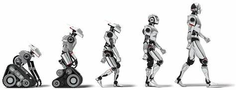

Cronologia
1.ª Generación.
Robots manipuladores. Son sistemas mecánicos multifuncionales con un sencillo sistema de control, bien manual, de secuencia fija o de secuencia variable.
• 2.ª Generación.
Robots de aprendizaje. Repiten una secuencia de movimientos que ha sido ejecutada previamente por un operador humano. El modo de hacerlo es a través de un dispositivo mecánico. El operador realiza los movimientos requeridos mientras el robot le sigue y los memoriza.
• 3.ª Generación.
Robots con control sensorizado. El controlador es un ordenador que ejecuta las órdenes de un programa y las envía al manipulador o robot para que realice los movimientos necesarios.
